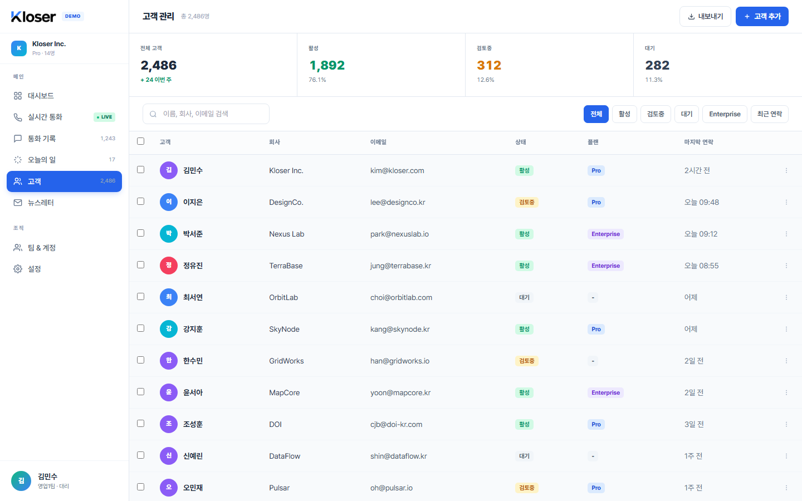

기둥 01
고객 입력 — 추가·수정·삭제가 한 모달에서 동작합니다
고객을 추가할 때 쓰던 모달이 그대로 수정·삭제도 처리합니다. 행을 클릭하면 같은 모달이 기존 값을 미리 채운 채 열리고, 변경한 값만 반영됩니다. 삭제 버튼도 같은 모달 안에 있습니다 — 사용자에게는 한 가지 입력 흐름만 노출됩니다.
조직 전체 기준 4가지 지표
한 모달, 세 가지 동작
추가
"고객 추가" 버튼
빈 모달 → 입력 → 저장. 목록 최상단에 새 행, KPI 전체 +1·대기 +1.
수정
행 클릭
같은 모달이 기존 값으로 채워져 열림 → 변경 → 저장. 목록 즉시 갱신, KPI 재계산.
삭제
모달 안 "삭제" 버튼
확인 후 행이 사라지고 KPI 재계산. 데이터는 시스템 내부에 보존됨.
한 명의 고객이 가질 수 있는 정보
- 이름 (필수)
- 회사 / 이메일 / 전화 (선택)
- 상태 — 활성 검토중 대기
- 담당자 (우리 조직 안 사용자)
- 마지막 연락 시각
변경 후 화면 갱신 정책
추가·수정·삭제 직후 목록을 전체 재조회합니다. 부분 갱신이 아니라 전체 재조회를 택한 이유는 검색·필터·정렬이 활성화된 상태에서도 KPI·정렬·페이지가 어긋나지 않게 하기 위함입니다.

기둥 02
검색·필터·정렬 — 화면 상태가 URL에 그대로 반영됩니다
검색어·상태 필터·정렬 기준을 바꾸면 그 선택이 URL에 반영됩니다. 새로고침·뒤로 가기·북마크 모두에서 같은 화면이 그대로 복원됩니다. 동료에게 링크를 보내면 같은 결과가 그대로 열립니다.
상태 필터 (2 그룹 칩)
정렬
선택된 조건이 곧 URL
통계는 항상 조직 전체 기준
상태=활성 필터로 7명만 보고 있어도 KPI는 "전체 12 / 활성 7 / 검토중 3 / 대기 2"를 그대로 표시합니다. 필터는 보기에만 영향을 주고, 통계는 진실값입니다.
검색 동작 범위
이름 · 회사 · 이메일에서 부분 일치(대소문자 무시)로 찾습니다. 데이터가 늘어나면 오타 허용·동의어·전문 검색은 Phase 5+에서 강화됩니다.
기둥 03
권한 분기 — 조회(Viewer)는 화면이 아닌 서버에서 차단
Phase 1의 4단계 권한이 고객 작업에 정확히 적용됩니다. 조회 권한은 추가·수정·삭제 시도가 화면 비활성화에만 의존하지 않고 서버에서 거부됩니다 — 직접 요청을 보내도 통과하지 않습니다.
기둥 04
조직 격리 — 다른 회사 고객은 보이지 않습니다
Phase 1이 만든 이중 분리(서버 + 데이터베이스)가 고객 데이터에도 그대로 적용됩니다. URL을 바꾸거나 ID를 추측해도, 자기 조직에 새 고객을 만들 때 다른 조직 ID를 박아 넣으려 해도 모두 차단됩니다.
조직 A — Acme Corp
사용자가 보고 있는 고객 12명
- 김민수 · 박지영 · 이수현
- 최영준 · 정하늘 · 강도윤
- … 나머지 6명
새 고객 작성 시점에도 다른 조직 ID를 박을 수 없습니다.
조직 B — Beta LLC
사용자에게 절대 보이지 않는 고객 12명
- 정승호 · 이채린 · 박재훈
- 김도윤 · 윤서아 · 한지유
- … (이 화면에 절대 등장 안 함)
기둥 05
입력 검증 + 안전한 삭제 — 두 단계 안전선과 즉시 사라지지 않는 데이터
잘못된 입력은 화면이 1차로 거르고, 그 뒤에도 서버가 한 번 더 거릅니다. 삭제는 화면에서 즉시 사라지지만 시스템 내부에서는 표시만 붙은 채 보존됩니다.
잘못된 입력 거부 흐름
STEP 1 — 화면
즉시 표시
이름이 비어 있으면 저장 버튼 비활성. 이메일 형식 어긋나면 입력 직후 표시.
STEP 2 — 서버
실제 안전선
화면을 우회해 직접 보낸 잘못된 요청도 거부. 항목 단위 사유와 함께 응답.
STEP 3 — DB
제약 조건
조직 격리 + 상태 값 제한이 마지막 안전선. 한 곳이 뚫려도 다음이 막아냄.
서버가 명시 거부하는 예시
- · 이름이 빈 추가 요청 →
400 invalid_input (name) - · 형식이 맞지 않는 이메일 →
400 invalid_input (email) - · 알 수 없는 상태 값 →
400 invalid_status - · 잘못된 정렬 컬럼 / 비정상 페이지 크기 →
400 invalid_<항목> - · 다른 조직 고객 ID로 수정·삭제 → "찾을 수 없음" (존재 자체를 노출하지 않음)
삭제 — 사라지는 듯하지만 시스템 내부엔 보존
화면에서 사라짐
목록·검색·통계 어디에도 노출되지 않습니다.
시스템 내부 보존
감사·복구를 위한 데이터는 그대로 남아 있습니다.
중복 우려 없음
같은 이름의 고객을 다시 만들어도 별개 row로 시작합니다.
SCOPE
Phase 2가 다루는 것 / 다루지 않는 것
Phase 2는 첫 번째 비즈니스 entity를 안전하게 올린 단계입니다. 평가자 화면에서 즉시 동작하는 부분과 다음 Phase로 미뤄둔 부분이 명확히 구분됩니다.
| 영역 | 현재 (Phase 2) | 예정 |
|---|---|---|
| 고객 추가 / 수정 / 삭제 | ✓ 신규 동작 | — |
| 검색 · 필터 · 정렬 (URL 동기화) | ✓ 신규 동작 | — |
| 조직별 고객 격리 (RLS) | ✓ 동작 (DB 차원) | — |
| 권한별 차등 (Viewer 차단) | ✓ 동작 (서버에서 403) | — |
| 입력 검증 (화면 + 서버 + DB) | ✓ 신규 동작 | — |
| 소프트 삭제 (보존) | ✓ 신규 동작 | — |
| 행 클릭 상세 패널 (통화 이력 결합) | ⌛ 미구현 | Phase 4 |
| 자가 회원가입 / 비밀번호 재설정 | ⌛ 미구현 | Phase 3 — 이메일 인증과 함께 |
| 팀 단위 권한 분기 | ⌛ 단순화 | Phase 3 — 팀 초대와 함께 |
| CSV 일괄 가져오기 / 외부 시스템 동기화 | ⌛ 미구현 | Phase 6+ |
| 고급 검색 (오타 허용 / 전문 검색) | ⌛ 부분 일치만 | Phase 5+ |
| 변경 이력 / 감사 로그 | ⌛ 테이블만 존재 | Phase 4 — 통화 기록과 함께 |
| 삭제 고객 복원 UI | ⌛ 운영자만 가능 | Phase 4+ 관리자 콘솔 |
Phase 2가 만든 약속(고객 데이터 형식·검증·격리·권한·소프트 삭제)은 다음 Phase의 모든 새 entity에 그대로 재사용됩니다. 한 번 정한 패턴이 회귀 검사로 보호되므로 새 기능마다 같은 검증을 다시 만들 필요가 없습니다.
REGRESSION
자동 회귀 — 다음 변경이 위 약속을 깨지 않도록
Phase 2의 모든 약속은 자동 검사로 매번 검증됩니다. 다섯 종이 모두 통과해야만 합격으로 인정됩니다.
65 / 65
서버 단위
인증 · 격리 · 저장소 · API · 실시간
16 / 16
고객 API
정상 + 모든 4xx 경로
7 / 7
고객 e2e
로그인 → CRUD → 격리 → 정리 검사
16 / 16
통화 e2e (회귀)
Phase 1 흐름 안 깨짐
PASS
형식 동기화
서버 ↔ 화면 정의 일치
e2etest- 접두사)가
모두 정리됐는지를 직접 검사합니다. 정리 약속을 코드 자체가 강제하므로, 회귀 누적이 시작되지 않습니다.
참고
기술 요약
보안·아키텍처에 관심 있는 평가자가 핵심 결정 사항을 한눈에 보기 위한 짧은 요약. 본 가이드의 다른 섹션은 이 용어를 몰라도 이해할 수 있도록 작성했습니다.
고객 저장 구조
customers 테이블 + 4 RLS 정책 + 5 부분 인덱스
(WHERE deleted_at IS NULL). soft delete는
deleted_at 컬럼으로 표현.
조직 격리
Phase 1과 같은 current_app_org_id() helper 기반 4 RLS 정책. 새 row 작성 시점에도
WITH CHECK으로 다른 조직 ID 작성 차단.
권한 분기
requireAuth + requireRole 미들웨어 조합. viewer는 쓰기 endpoint에서
application 단계 403, 추가로 RLS가 두 번째 안전선.
입력 검증
zod 스키마가 서버 측 단일 진입점. ZodError → 400 invalid_input,
정렬·페이지 위반은 400 invalid_<field> + value로 별도 매핑.
양쪽 형식 동기화
server/src/types/customers.ts (zod 원본) +
platform/types/customers.js (JSDoc 사본) +
test/sync_shared_types.mjs (정규식 diff 검사).
변경 후 화면 갱신
추가·수정·삭제 직후 목록 전체 재조회 (loadAll). 검색·필터·정렬 활성화 상태에서도
통계·페이지 정합 유지.
자동 회귀
npm --prefix server test 65/65 +
sync_shared_types +
phase_0_5_e2e 16/16 +
phase_2_customers_e2e 7/7.
Phase 1의 기반(계정·조직·권한·세션·실시간)이 궁금하면 PHASE_1_FOUNDATIONS.html 에 있습니다.